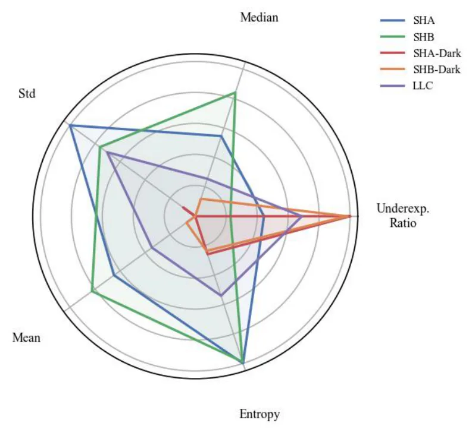
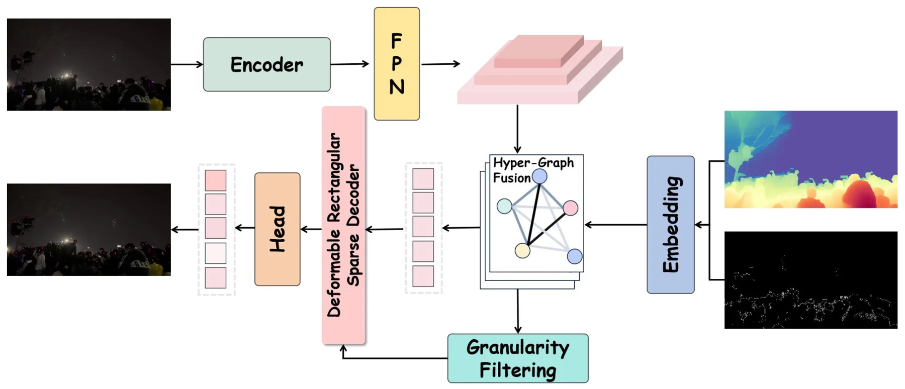
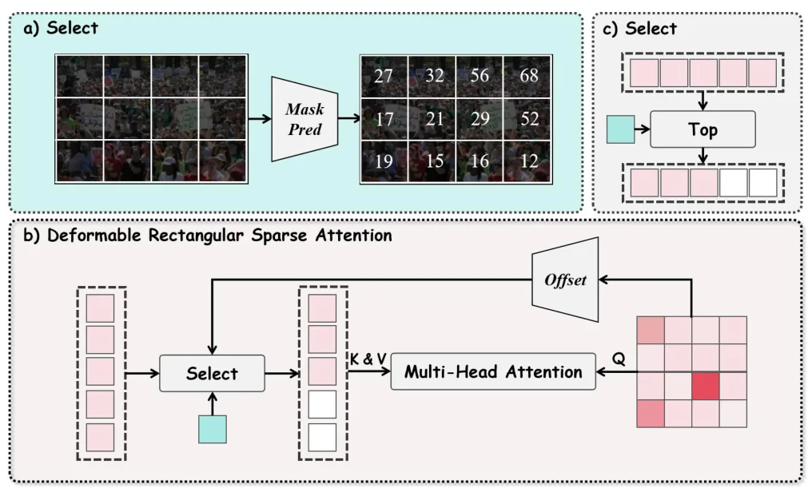
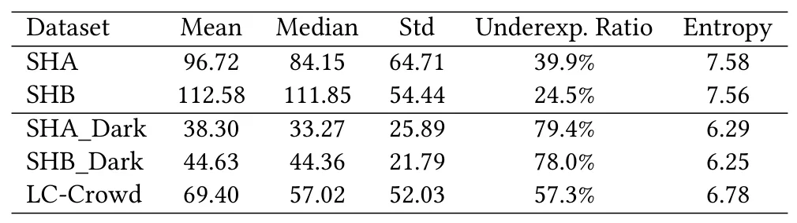
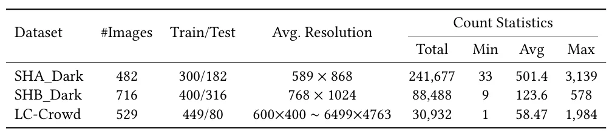
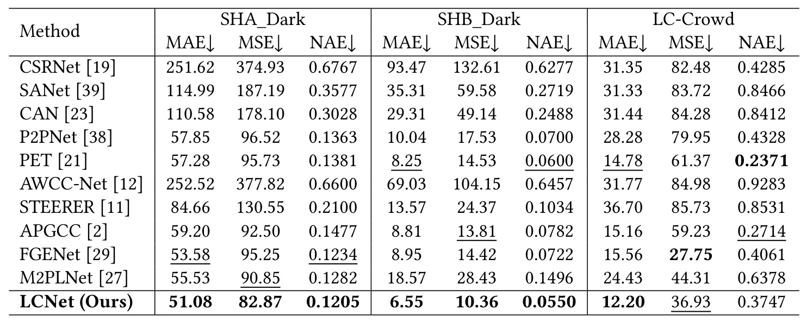
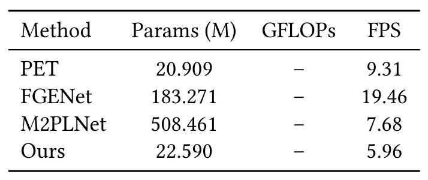

面向低光人群计数的多模态超图融合Multi-Modal Hyper-Graph Fusion for Low-Light Crowd Counting
任务是人群计数而非定位/建图；但其低光下使用深度/边缘结构先验的多模态融合思路可作为夜间视觉前端参考。
一句话工作总结
该方法用 RGB、depth 和 edge 构建多模态超图，并用稀疏注意力提升低光密集预测，对夜间感知有间接启发。
摘要
低光环境下的人群计数具有实际意义但研究不足。现有方法多聚焦光照充足场景，或仅依赖 RGB 表示，而在极暗与非均匀照明下 RGB 往往不可靠。本文构建了三个低光人群计数基准：两个合成数据集 SHA_Dark、SHB_Dark 和一个真实 LC-Crowd。受 Retinex 物理建模启发，方法引入深度和 Canny 边缘作为几何与结构先验，增强低光下的内在反射表示；提出 Multi-Modal Hyper-Graph Fusion 模块，把 RGB 外观、depth 几何和 edge 结构作为统一超图节点，通过动态 hyperedge 构建和消息传递显式捕获高阶互补关系。另提出 Deformable Rectangular Sparse Attention，把计算集中在信息区域。实验在三个基准上优于现有 SOTA。
Crowd counting is a fundamental task in computer vision. However, crowd counting in low-light environments remains largely underexplored, despite its practical importance in the real world. Existing methods mainly focus on well-lit scenes or rely on single-modality Red-Green-Blue (RGB) representations, which often become unreliable under extreme darkness and complex non-uniform illumination. To handle this problem, we construct three new low-light crowd counting benchmarks, which consist of two synthetic datasets, SHA\_Dark and SHB\_Dark, and a real-world benchmark LC-Crowd (Low-light Crowd Dataset). Inspired by Retinex-based physical modeling, we introduce depth and Canny edge cues as complementary geometric and structural priors to enhance the intrinsic reflectance representation under low-light conditions. We propose a Multi-Modal Hyper-Graph Fusion module, which formulates RGB appearance, depth geometry, and edge structure cues as nodes in a unified hyper-graph and explicitly captures their high-order complementary relationships via dynamic hyperedge construction and message passing. Furthermore, to adaptively allocate computation in dense prediction, we propose a Deformable Rectangular Sparse Attention (DRSA) module, which concentrates computation on informative regions through anchor-aware estimation and adaptive rectangular window modeling. Based on these designs, we develop a unified Low-Light Counting Network (LCNet) for robust low-light crowd counting. Extensive experiments on three benchmarks demonstrate that the proposed method achieves the best overall performance against existing state-of-the-art (SOTA) methods. The code is in the supplementary material. The datasets will be made public upon acceptance.
中文解读摘录
- 链接：abs / PDF；作者：Hao-Yuan Ma, Li Zhang, Yushi Qiu, Jie Gao, Yan Zhang, Bangjun Wang；类别：cs.CV, cs.AI, cs.GR；采集 score=6。
- 核心思路：针对低光人群计数，构建 RGB、depth、Canny edge 多模态超图，通过动态 hyperedge 和 message passing 捕获高阶互补关系，并用 Deformable Rectangular Sparse Attention 聚焦密集预测中的关键区域。
- 与用户方向的关系：不是 SLAM/定位论文，但 depth/edge 作为低光场景几何与结构先验，对夜间视觉感知或前端鲁棒性有间接启发。
- 关注点：建议只外围关注其低光多模态融合机制；摘要没有报告 VO/VIO/SLAM 指标。
图表/页面预览

{kind=link}

{kind=link}

{kind=link}

{kind=link}

{kind=link}

{kind=link}

{kind=link}
